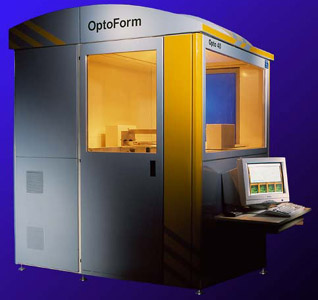

|
Seramik,
metal ve diðer toz katkýlý kompozit fotopolimer reçinelerin
stereolitografi cihazlarýnda kullanýlmasý konusunda yýllardýr
ABD, Avrupa ve Japonya'da araþtýrmalar yapýlmaktadýr. Japon
D-MEC Ltd. (http://www.d-mec.co.jp)
ve CMET (http://www.nttd-cmet.co.jp)
firmalarý seramik toz katkýlý reçine kullanan ticari ürünlere
yýllardýr sahip olmalarýna raðmen bu ürünler Avrupa ve ABD
pazarýna sunulmamaktadýr.
Avrupa'da bu konuda birçok patent sahibi Fransýz OptoForm
SARL firmasý ise Þubat 2001 tarihinde ABD tabanlý 3D Systems
tarafýndan satýn alýnmýþtý. Ardýndan, 20-03-2002 tarihinde
otoinþa sistem üreticisi 3D Systems ve malzeme üreticisi DSM
Somos ortaklýðýyla OptoForm LLC (Valencia, CA) ismiyle yeni
bir firma kuruldu. OptoForm LLC, ADM (Advanced Digital Manufacturing
/ Ýleri Sayýsal Ýmalat) ismi verilen bu yeni teknolojinin
imalatý ve pazarlamasýyla ilgilenecek. 2002 sonunda ticari
hale getirilmesi hedeflenen ADM tekniklerinden DCM (Direct
Composite Manufacturing / Direkt Kopmpozit Ýmalat) ile cam
elyaf takviyeli kompozit plastik, seramik ve metal malzemelerden
parça ve/veya kalýp inþa edilebilecektir. OptoForm LLC, hassas
döküm için uygun özelliklere sahip ve/veya düþük maliyetli
modeller inþa edebilmek için köpük partikülleri katkýlý fotopolimer
reçineler üzerine de yeni bir patent almýþtýr.
Kompozit
reçineler macun kývamýnda olduðu için döner merdaneli katman
yayma teknikleri kullanýlmakta ve bu, sývý fotopolimer reçineye
göre daha yüksek hýzlarda yapýlabilmektedir. Malzeme kartuþlar
halinde cihaza yüklenmekte ve gerektikçe kullanýlmaktadýr.
Ýnþa edilen seramik veya metal katkýlý modeller ek bir sinterleme
iþlemi sonrasý tam dayanýma ulaþmaktadýr. Yüksek üretim hýzý
ve malzeme mukavemeti sayesinde OptoForm cihazlarý, prototip
veya kalýp imalatýnýn yanýnda bazý uygulamalarda "kitlesel
özel üretim" (mass customization) hedefine yönelik olarak
direkt seri imalatta da kullanýlabilecektir.
Yeni
OptoForm cihazý ve bu cihazla üretilmiþ bazý parçalarla ilgili
resimler ve OptoForm teknoljisini açýklayan 23 sayfalýk pdf
formatýndaki bir prezentasyon DSM SOMOS web sitesinde yayýnlanmaya
baþlamýþtýr:
http://www.dsmsomos.com/pages/products/en/optoform.htm
Daha fazla biligi "Otoinþa Teknolojileri" raporunda
bulunabilir: OptoForm
LLC |